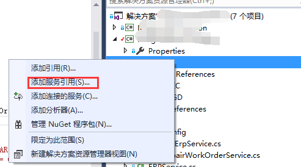
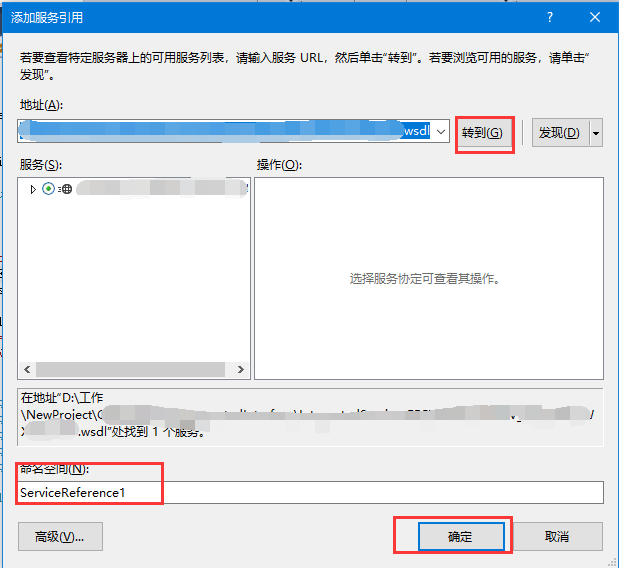

记录一下，方便下次使用，或者能帮助到别人。
一、添加服务引用，输入WSDL文件地址。


二、代码
1 public TESTClient TestContext()
2 {
3 var binding = new BasicHttpBinding();
4 binding.MaxReceivedMessageSize = int.MaxValue;
5 binding.Security.Transport.ClientCredentialType = HttpClientCredentialType.Basic;
6 binding.Security.Mode = BasicHttpSecurityMode.TransportCredentialOnly;
7 string Host = "webservice地址";
8 var address = new EndpointAddress(Host);
9 var method= new TESTClient (binding, address);
10 method.ClientCredentials.ServiceCertificate.Authentication.CertificateValidationMode = X509CertificateValidationMode.None;
11 method.ClientCredentials.UserName.UserName = "用户名";
12 method.ClientCredentials.UserName.Password = "密码";
13 return method;
14 }三、调用
1 public string Test(string str)
2 {
3 var s = new TestService();
4 var result = s.TestContext().TestMethod(str);
5 return result;
6 }